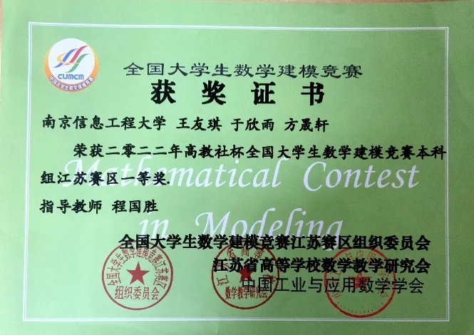
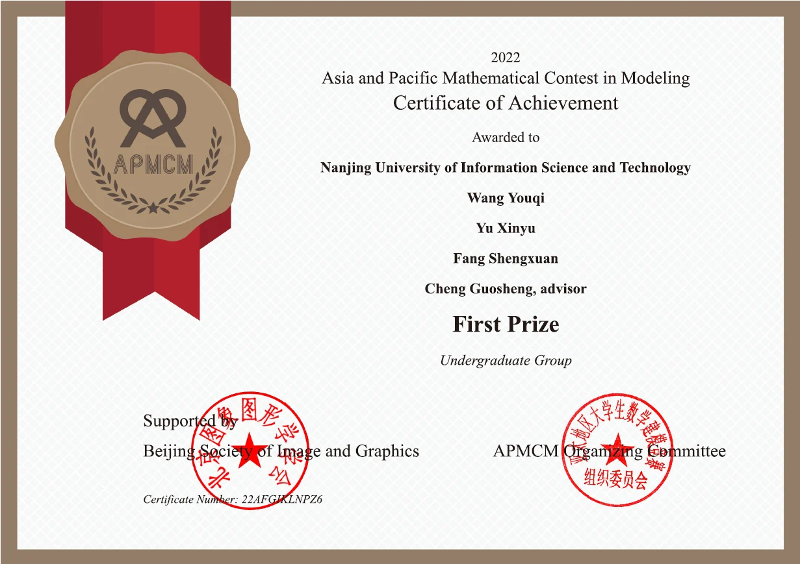
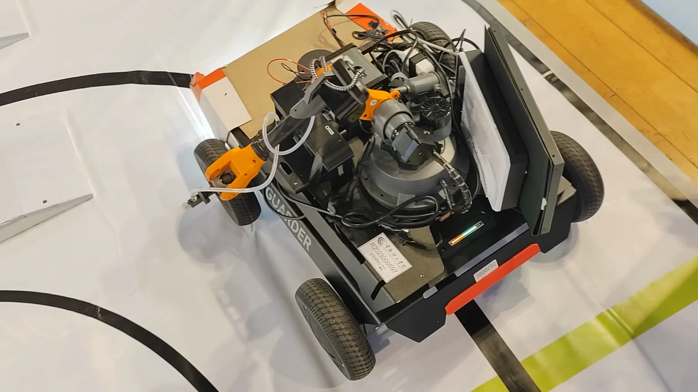
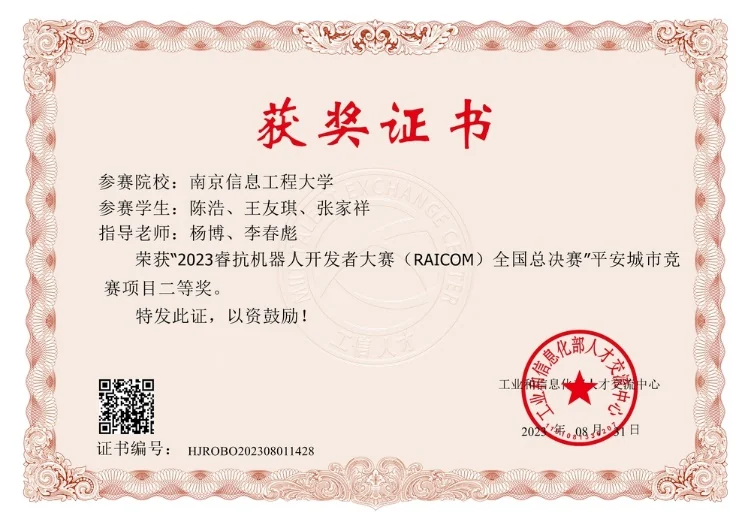
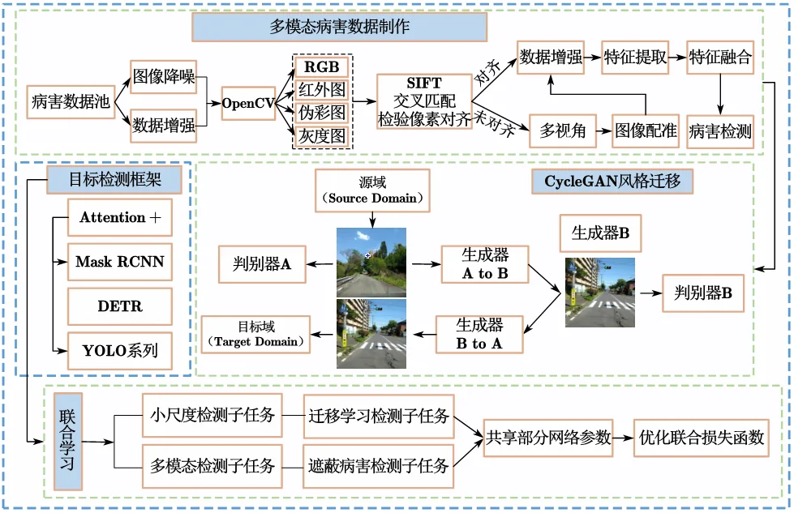
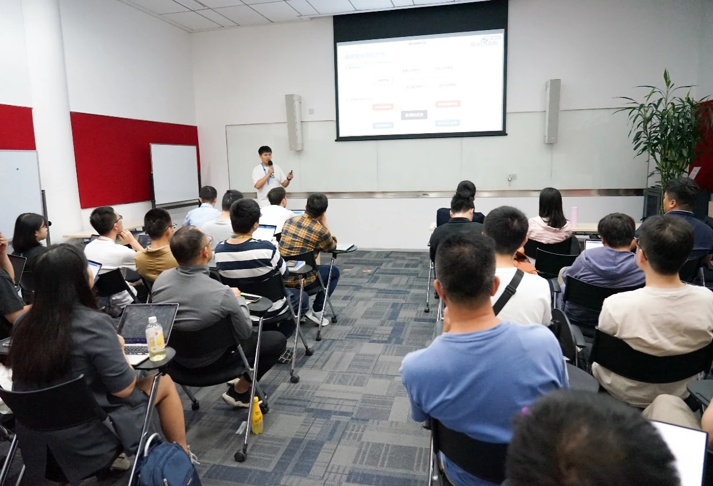
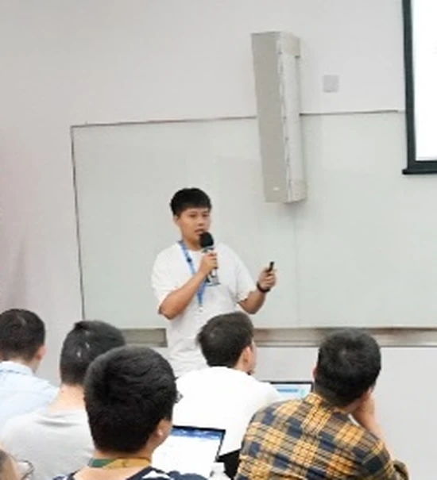
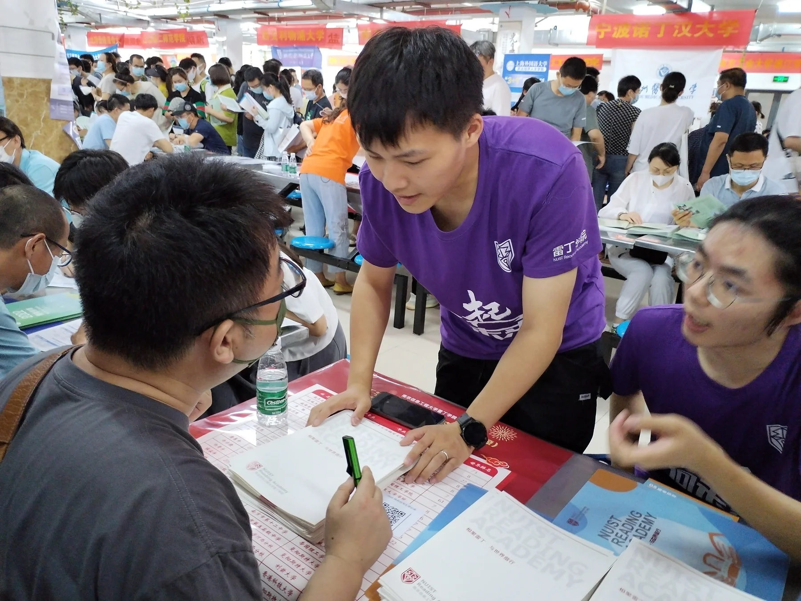
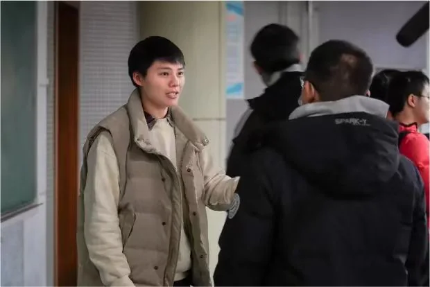

2023 · Featured achievement
Mathematical Contest in Modeling · Finalist
Reached the top 1.8% among 11,296 teams—the highest award level achieved by the university in this competition that year.
1.8%global top tier
Undergraduate archive · 2020–2024
Mathematics trained my attention to structure and evidence. Competitions, early research, and community work turned that foundation into a habit of building, testing, and sharing.


A four-year trajectory
The undergraduate years were not a separate chapter from my current work; they built the quantitative discipline, engineering instincts, and collaborative habits behind it.
01 / Academic foundation
Ranked first in a cohort of 75 with strong performance across analysis, algebra, differential equations, numerical methods, programming, and mathematical modeling.
02 / Competitions
Seven mathematical modeling competitions, seven awards, followed by a team robotics challenge.
Reached the top 1.8% among 11,296 teams—the highest award level achieved by the university in this competition that year.
Highlights include Jiangsu First Prize in CUMCM and First Prize in APMCM, both placing within roughly the top five percent of their respective fields.



Won provincial and national second prizes in the Safe City track.

03 / Early research & engineering

Led the project from data construction and cross-domain transfer to detection model design and evaluation. The work established an early interest in visual evidence, localization, and model robustness.
Applied mathematical and engineering foundations to retrieval and long-context conversation capabilities for a quantum-domain large language model.


04 / Community

Contributed as a volunteer and class leader, supporting outreach activities and class development.

Built a subject learning community and spent more than 200 hours mentoring peers and younger students.
06 / Award archive
A complete archive of 23 distinct certificates spanning academics, modeling, engineering, research outputs, leadership, and service.
Current direction
See how this trajectory evolved into research on multimodal models and trustworthy image forensics.
Explore current research ↗